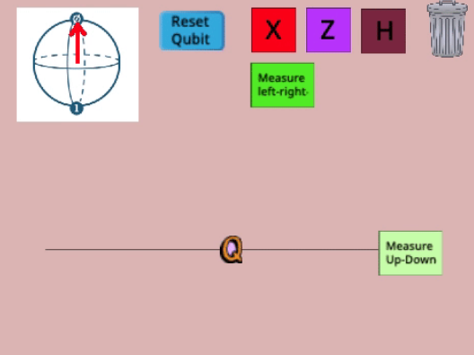
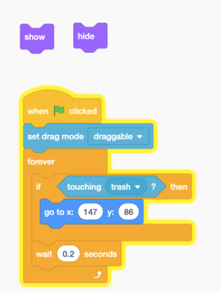
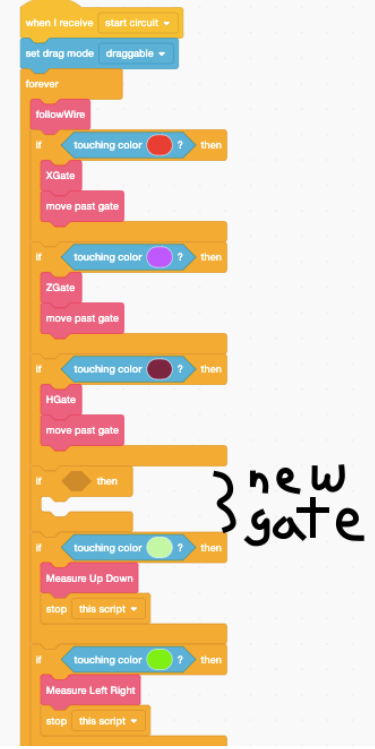

Quantum Circuits¶
You’ve learned in the last section about qubits and quantum measurements. You saw how we could use magnets and blockers to do measurements on quantum spins.
However, what happens if we want to change the spin of a particle? Remember that quantum objects can be used quantum bits, which are used for quantum computation. For example, two spin states such as \(|0\rangle\) and \(|1\rangle\) can be used as the quantum version of the 1 and 0 bit states used to transmit information in a classical computer.
You’ve seen that applying AND, OR, and NOT gates (among others) to classical bits will change the infomration contained. There is a way to manipulate quantum information in a similar way, using quantum gates as part of a quantum circuit.
There are three parts of a quantum circuit.
Wires. Wires carry qubits from place to place.
Gates. Gates do things to qubits.
Measurements. These measure qubits, just like the magnets and blockers in the Stern-Gerlach experiment.
Here is an image of a circuit that measures a qubit in the up-down basis.

Remember that the state of a qubit can be drawn as an arrow pointing in one direction. In the top left of the animation, we can see that the qubit starts out pointing up. This up state corresponds to the \(\uparrow\) or \(|0\rangle\) that we are familiar with.
Let’s explore some of the gates that we are going to use as part of this activity. We will be looking at
X gates
H gates
Z gates
…and using our knowledge of them to build circuits.
The X gates is identical to the NOT gates that we saw in classical circuits. Applying a NOT gates to a state will turn it into its opposite: X applied ot \(|0\rangle\) will transform it into a \(|1\rangle\) state and vice versa.
The H gate, when applied to a normal state, will create a superposition: H applied to \(|0\rangle\) will create \(\leftarrow\) and to \(|1\rangle\) will create \(\rightarrow\).
The Z gate is a bit trickier. It does nothing when applied to the \(|0\rangle\) state, but will “shift” the \(|1\rangle\) state so that it becomes -\(|1\rangle\). You can see the effect of this on a superposition state, such as \(\leftarrow\; = |0 \rangle + |1 \rangle\). If you apply the Z gate to \(\leftarrow\), you will get \(|0 \rangle - |1 \rangle\), which is now the $\rightarrow$ state.
Remember from the Stern-Gerlach experiment that, in some cases, measuring a quantum system gave an unpredictable result. Measuring a \(\leftarrow\) or \(\rightarrow\) state in the up-down basis (measuring in terms of \(|0\rangle\) or \(|1\rangle\) states) will result in a random outcome because the left and right states are superpositions of the \(|0\rangle\) or \(|1\rangle\) states. This is like flipping a coin and having it come either heads or tails at any given time.
In the same way, measuring a \(|0\rangle\) or \(|1\rangle\) state in the left-right basis (measuring in terms of the \(\leftarrow\) or \(\rightarrow\) states) will also have a random outcome, because the \(|0\rangle\) or \(|1\rangle\) states are superpositions of the \(\leftarrow\) and \(\rightarrow\) states. This is super weird, so take a second to understand it!
Also remember that up,down, left, and right don’t mean anything from a physical point of view. An ‘up’ spin is not actually an arrow that points upwards (which is why, when added to a ‘down’ spin, it makes a ‘left’ spin and not nothing). ‘Up’ and ‘down’ are words we used to describe the behavior of spins in the Stern-Gerlach experiment.
Quantum Circuits Activity¶
In this activity you’ll be exploring quantum circuits in your small groups.
You’ll use the “One Qubit Circuit” project in Scratch to build your circuits. We’ll give you a series of challenges, which will have you exploring how quantum circuits work.
Each time you build a circuit that completes a challenge, we’d like you to record your solution into a shared Jamboard. Right now, we’d like one member of the group to make a Jamboard and share the board with the other small group members.
You can record your solutions into the Jamboard either by writing the gates that you used, drawing the gates you used, or by taking a screenshot of your working circuit (the screenshot option is easiest on Macs—press command-shift-F4 all at once).
Complete the challenges and the add your solutions to the Jamboard!
Challenge 1¶
Create a quantum circuit that puts the qubit into each of the 4 states up, left, down, right (in any order). Note that there are lots of correct ways to do this! You can use the hints below if you’d like some help.
Hint (1 of 3): You can notice that X will get you from up to down.
Hint (2 of 3): Z switches the state from left to right.
Hint (3 of 3): H switches the state from being either up or down, to being either left or right.
Challenge 2¶
Build a circuit and choose a measurement at the end so that the result of the measurement is random.
This means that when you run the same circuit a few times the measurement at the end will sometimes say “up” and sometimes say “down” OR, sometimes it will say “left” and sometimes say “right”.
You can use the hints below if you’d like some help.
Hint (1 of 2): Remember that their is more than one kind of measurement, you can use either a left-right measurement or an up-down measurement! Hint (2 of 2): Remember from the Stern-Gerlach experiement that an up state going into a left-right magnet gave a random outcome.
Challenge 3¶
You’ve seen that you can use the quantum gates to change the quantum system (move the arrow). But can you change it back? Start your circuit with an X gate. Then, add gates that undo what the X gate did. Qubits going into the circuit should come out unchanged at the end. You can use the hints below if you’d like some help.
The X gate flips up to down, and down to up.
Challenge 4¶
Start your circuit with a Z gate and then an H gate. Then, add gates that undo the Z and H gates. Qubits going into the circuit should come out unchanged at the end. You can use the hints below.
Hint (1 of 2): The H gate actually undoes the H gate, and the Z gate undoes the Z gate.
Hint (2 of 2): The circuit has two gates - Z and then H. To undo them, you should undo H and then undo Z.
Challenge 5¶
You might have noticed that, starting with an “up” pointing qubit, an X gate will take you to a “down” qubit. But can you do this without ever using an X gate?
Create a circuit that takes in an “up” state and sends out a “down” state, but, create this circuit without ever using an X gate! You can use the hints below.
An H gate takes up to left, and takes right to down.
Challenge 6¶
If you put an “up” state into an X gate, the state will flip to down. For each gate though there are special states which are not affected by that gate.
Create a state that the X gate doesn’t do anything to. You’ll need at least one gate before the X gate so that the qubit going into the X gate isn’t in the “up” state! You can use the hints below.
Remember that the X gate flips the up arrow to a down arrow, and down to up, so the up and down states won’t work!
Challenge 7¶
Create a state that the Z gate doesn’t do anything to. You can use the hints below.
Hint (1 of 1): The Z gate flips the left state into the right one, and the right one into the left one, so left and right can’t work!
Challenge 8¶
Your quantum circuit is built out of quantum gates, and the gates happen to the qubit in a certain order - the first gate changes the qubit, then the next one. Does it matter which gates come first?
Find two gates which create different circuits when put in a different order.
You can use the hints below.
Test out X then H, and compare to H then X
Challenge 9¶
Find two gates which create the same circuit when put in a different order.
You can use the hints below.
Hint (1 of 1): Test out X then Z, and compare to Z then X.
Make your own gate!¶
For this challenge, you’ll need to click the “see inside” button on the Scratch project page. Once inside the project, click on the “Qubit” sprite and look at the code tab.
You’ll see the instructions the qubit follows as it moves through the circuit. You can notice that the qubit works using a colour coding system. If it touches the colour corresponding to a certain gate, it will do that gate.
For this challenge you’ll edit this code and create your own quantum gate!
To get started, look for the “my gate” sprite. In the code tab you’ll notice a “show” block and a “hide” block. Click the “show” block.

A new sprite will appear in the circuit editor. You can go to the “costumes” tab to change the appearance of your gate (Make sure to keep your gate as a square and don’t change the size, or the circuit won’t work properly!)
Next go to the Q sprite. You’ll need to an “if” statement so the qubit checks if it is touching the new gate sprite. Then inside the if statement build your quantum gate! You can create a new gate by putting together a few of the existing gates.
Here’s an example:

Once you’ve created your own quantum gate, you’re ready to share your Scratch project! Click on the “Share project” button at the top of the project page. After sharing, add your project to the camp Scratch studio.
Explore other Projects¶
Check out 2-3 other projects in the Scratch studio. Without looking inside their code, can you figure out what their mystery gate is? How is it built out of the X,H, and Z gates? Post your guess in the comments on their Scratch project page.